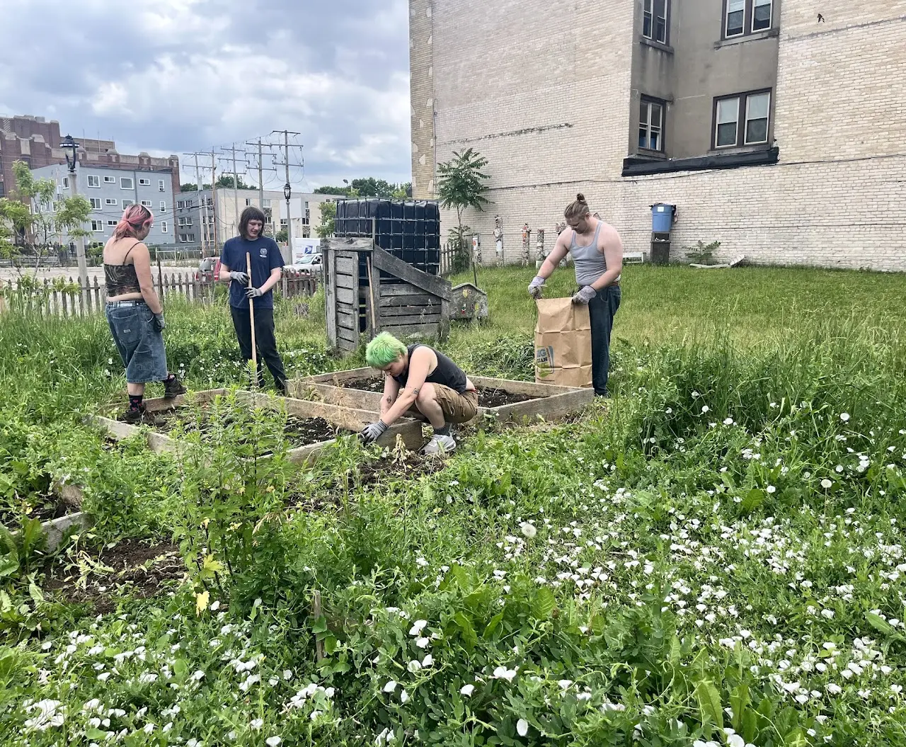
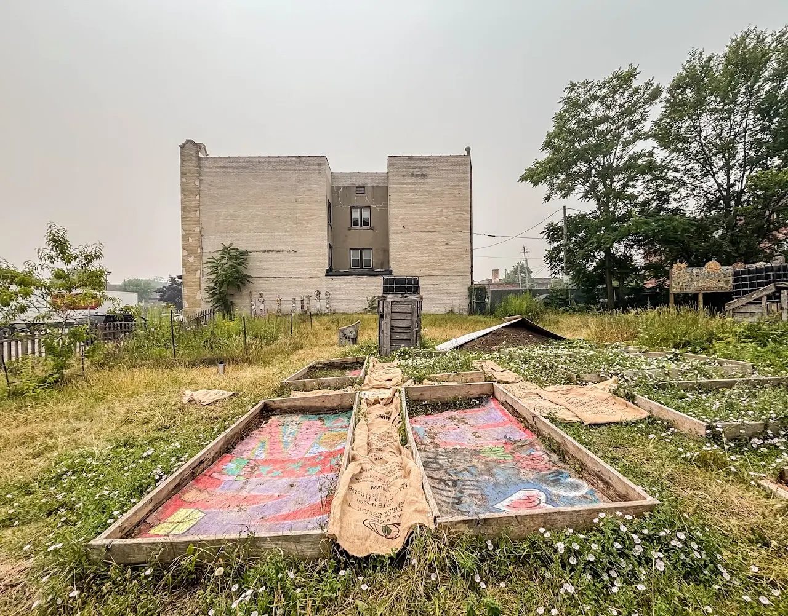
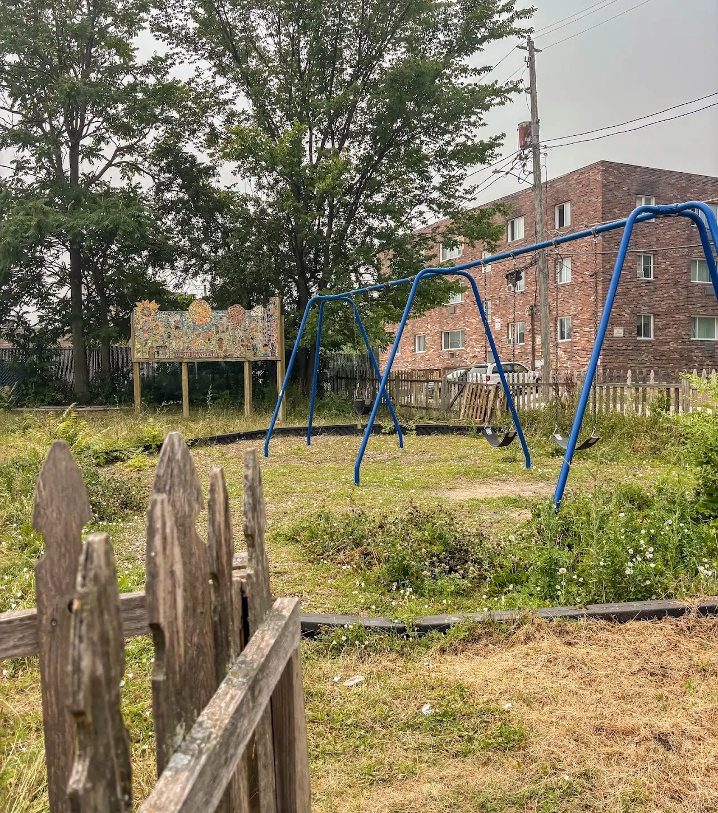
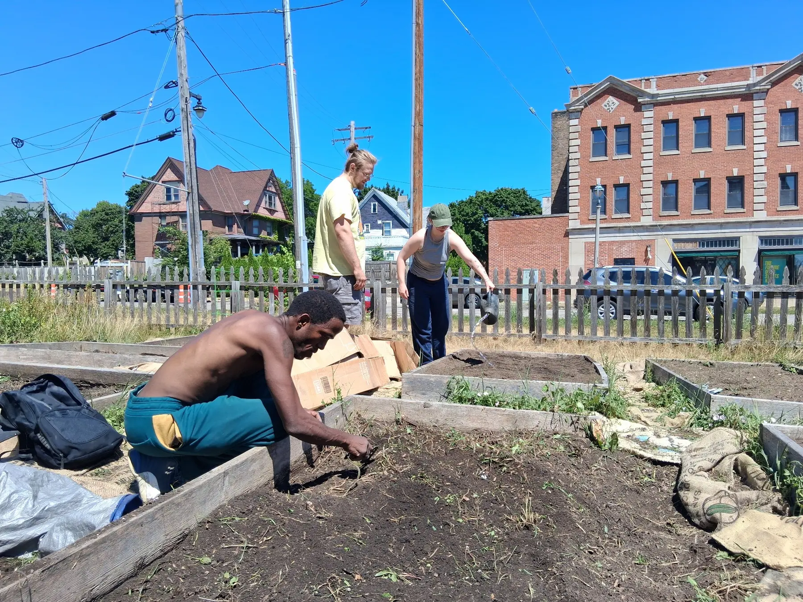
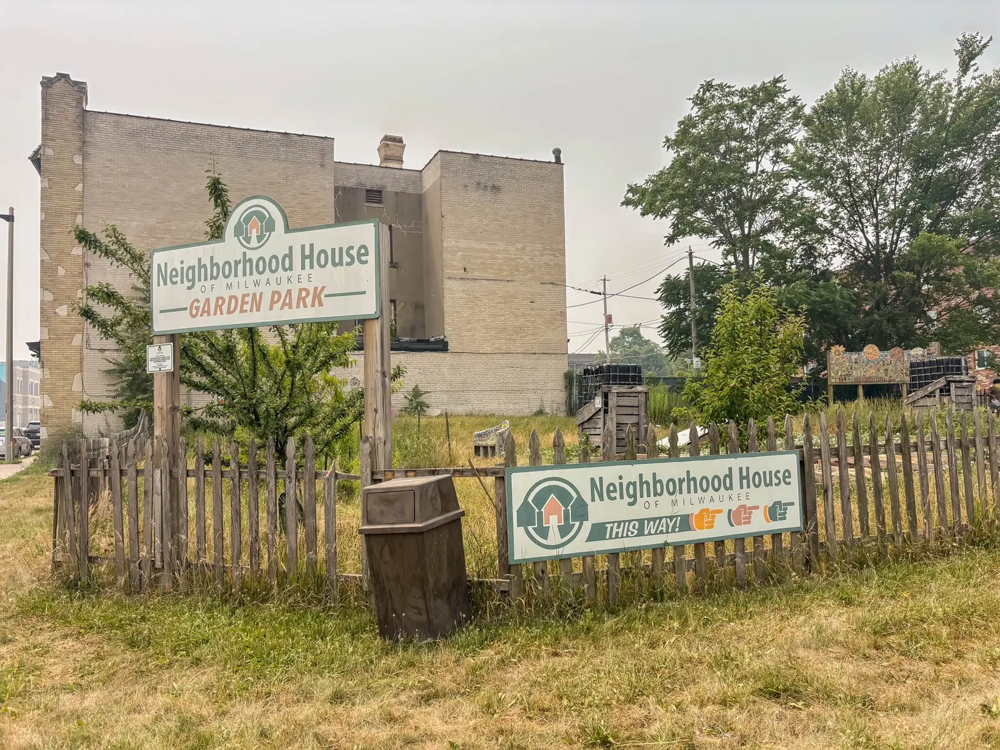

Documented ecosystem-building labor
A documented floor across wellness, ecology, outreach, learning, leadership, and the systems that hold the work.
Senses Yoga School is cultivating a community-rooted wellness ecosystem through Yoga for Life, contemplative arts, leadership development, stewardship activation, and restorative public engagement.


January 1–August 31, 2026 · Current developments through September 2026
A documented floor across wellness, ecology, outreach, learning, leadership, and the systems that hold the work.
Documented January–August capacity supporting YAGI and ecological field work.
A conservative floor of instructional and program activities.
A conservative engagement floor, not an exhaustive unique-person count.
Across 13 valid Yoga for Life pre/post check-ins collected April 30–May 28.
Every respondent in that measured Yoga for Life outcome sample.
The labor total is a documented floor. Q2 activity and engagement counts are conservative, and the Yoga for Life sample reflects immediate self-reported outcomes—not clinical or long-term therapeutic effects.
The prior Senses site described impact through five connected areas. This page carries that most recently published framework forward while current participation and stewardship totals are being consolidated.
Reporting note: these are the latest publicly listed areas of work from the previous website. No undated figures have been presented as current totals.
Yoga, breathwork, meditation, sound, and reflective practice offered in community settings and shaped to welcome varied bodies, backgrounds, and experience levels.
Creative, sensory, and reflective practices that strengthen imagination, awareness, expression, and connection.
Volunteer and apprenticeship pathways through which participants grow from learning and assisting into stewardship, coordination, and responsible leadership.
Hands-on care for gardens and public spaces, joining ecological learning with embodied practice, foodways, and community responsibility.
Long-term collaboration with neighborhoods, public spaces, cultural institutions, schools, workplaces, and community organizations.
Yoga For Life meets people in parks, gardens, marketplaces, faith communities, and partner settings. School-based and workplace offerings are shaped through specific partnerships and sponsorships. YAGI extends practice into ecological learning where the land becomes a living classroom.
The archive follows the work from early garden construction and community gathering toward a sustained outdoor learning site. Progress is held through photographs, field observations, and the voices of guides, volunteers, and site leaders.



Offer time, skills, and care to programs and living sites.
CollaborateBring accessible wellness and place-based learning into your community.
GatherJoin a current public class, workshop, or community event.
SustainHelp maintain teachers, apprentices, materials, sites, and access.